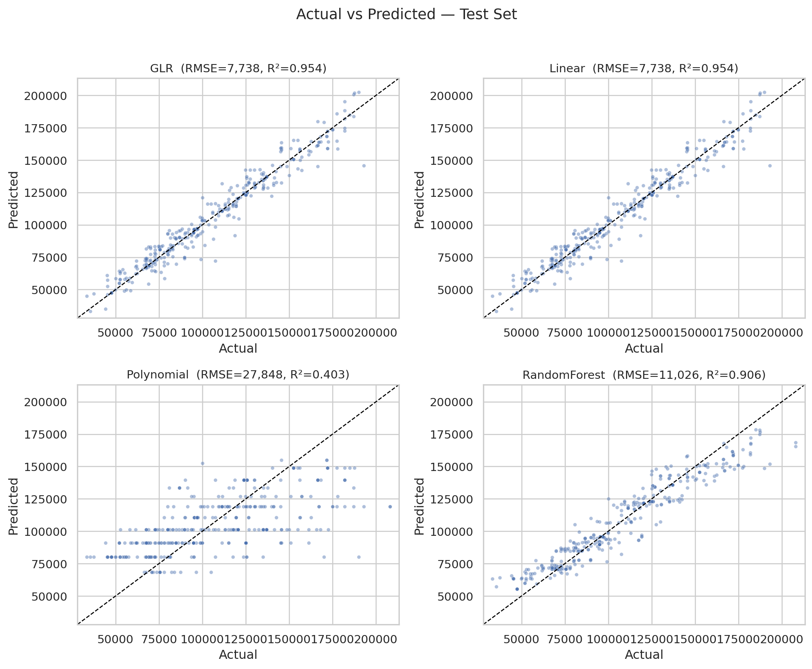
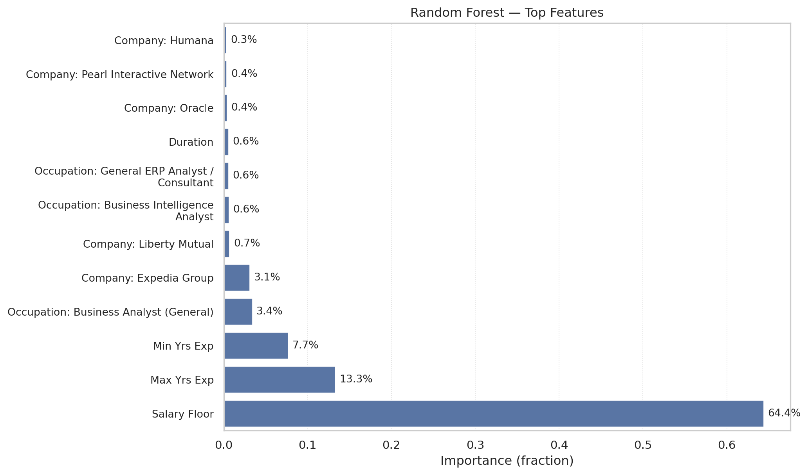

Requirement already satisfied: kaleido in ./.venv/lib/python3.12/site-packages (1.1.0)
Requirement already satisfied: choreographer>=1.0.10 in ./.venv/lib/python3.12/site-packages (from kaleido) (1.1.1)
Requirement already satisfied: logistro>=1.0.8 in ./.venv/lib/python3.12/site-packages (from kaleido) (1.1.0)
Requirement already satisfied: orjson>=3.10.15 in ./.venv/lib/python3.12/site-packages (from kaleido) (3.11.3)
Requirement already satisfied: packaging in ./.venv/lib/python3.12/site-packages (from kaleido) (25.0)
Requirement already satisfied: pytest-timeout>=2.4.0 in ./.venv/lib/python3.12/site-packages (from kaleido) (2.4.0)
Requirement already satisfied: simplejson>=3.19.3 in ./.venv/lib/python3.12/site-packages (from choreographer>=1.0.10->kaleido) (3.20.2)
Requirement already satisfied: pytest>=7.0.0 in ./.venv/lib/python3.12/site-packages (from pytest-timeout>=2.4.0->kaleido) (8.4.2)
Requirement already satisfied: iniconfig>=1 in ./.venv/lib/python3.12/site-packages (from pytest>=7.0.0->pytest-timeout>=2.4.0->kaleido) (2.1.0)
Requirement already satisfied: pluggy<2,>=1.5 in ./.venv/lib/python3.12/site-packages (from pytest>=7.0.0->pytest-timeout>=2.4.0->kaleido) (1.6.0)
Requirement already satisfied: pygments>=2.7.2 in ./.venv/lib/python3.12/site-packages (from pytest>=7.0.0->pytest-timeout>=2.4.0->kaleido) (2.19.2)
[OK] Environment initializedAssignment 04 - Lightcast Salary Prediction
1 Executive Abstract
This project builds and evaluates salary prediction models on Lightcast job-posting data. After enforcing sanity filters (positive salaries; non-negative experience), categorical fields were encoded and assembled for modeling. We trained four regressors—Generalized Linear Regression (GLR), Linear Regression, Polynomial Regression (quadratic in MIN_YEARS_EXPERIENCE), and Random Forest—and report test RMSE/MAE/R², along with coefficient/t-value summaries for interpretability. Artifacts are saved under _output/.
[Stage 93:> (0 + 1) / 1] [Stage 94:> (0 + 1) / 1][OK] Cleaned rows: 2243
[vars] y: SALARY
[vars] numeric: ['MAX_YEARS_EXPERIENCE', 'DURATION', 'SALARY_FROM', 'MIN_YEARS_EXPERIENCE']
[vars] categorical: ['COMPANY_NAME', 'LOT_V6_SPECIALIZED_OCCUPATION_NAME'] [Stage 97:> (0 + 1) / 1] [Stage 103:> (0 + 1) / 1] [OK] Pipeline fit complete
+--------+--------------------+-----------------------+------------------------------------------------------+-------------+
|label |MIN_YEARS_EXPERIENCE|MIN_YEARS_EXPERIENCE_SQ|features |features_poly|
+--------+--------------------+-----------------------+------------------------------------------------------+-------------+
|131100.0|2.0 |4.0 |(848,[0,1,2,3,37,839],[2.0,11.0,113400.0,2.0,1.0,1.0])|[2.0,4.0] |
|136950.0|3.0 |9.0 |(848,[0,1,2,3,7,839],[3.0,28.0,115300.0,3.0,1.0,1.0]) |[3.0,9.0] |
|136950.0|3.0 |9.0 |(848,[0,1,2,3,7,839],[3.0,28.0,115300.0,3.0,1.0,1.0]) |[3.0,9.0] |
|104000.0|3.0 |9.0 |(848,[0,1,2,3,107,837],[3.0,8.0,104000.0,3.0,1.0,1.0])|[3.0,9.0] |
|80000.0 |3.0 |9.0 |(848,[0,1,2,3,21,840],[3.0,37.0,60000.0,3.0,1.0,1.0]) |[3.0,9.0] |
+--------+--------------------+-----------------------+------------------------------------------------------+-------------+
only showing top 5 rows[OK] Pruned final_df columns: ['row_id', 'label', 'features', 'features_poly', 'MIN_YEARS_EXPERIENCE', 'MAX_YEARS_EXPERIENCE', 'DURATION', 'SALARY_FROM'][Stage 110:> (0 + 1) / 1] [Stage 113:> (0 + 1) / 1][OK] Split sizes: 1848 395 An 80/20 train–test split was used, this is a standard ratio for tabular regression data. It balances bias and variance by keeping sufficient training data while holding back a meaningful test sample for performance validation.
25/10/07 01:01:51 WARN Instrumentation: [45784a35] regParam is zero, which might cause numerical instability and overfitting.
[Stage 116:> (0 + 1) / 1] 25/10/07 01:01:55 WARN Instrumentation: [45784a35] Cholesky solver failed due to singular covariance matrix. Retrying with Quasi-Newton solver.
25/10/07 01:01:56 WARN Instrumentation: [570296d9] regParam is zero, which might cause numerical instability and overfitting.
[Stage 117:> (0 + 1) / 1] 25/10/07 01:02:00 WARN Instrumentation: [570296d9] Cholesky solver failed due to singular covariance matrix. Retrying with Quasi-Newton solver.
[Stage 118:> (0 + 1) / 1] 25/10/07 01:02:05 WARN Instrumentation: [10366c66] regParam is zero, which might cause numerical instability and overfitting.
[Stage 119:> (0 + 1) / 1] [Stage 120:> (0 + 1) / 1] [Stage 121:> (0 + 1) / 1] [Stage 122:> (0 + 1) / 1] [Stage 123:> (0 + 1) / 1] [Stage 125:> (0 + 1) / 1][Stage 126:> (0 + 1) / 1] [Stage 127:> (0 + 1) / 1] 25/10/07 01:02:34 WARN DAGScheduler: Broadcasting large task binary with size 1258.5 KiB
[Stage 129:> (0 + 1) / 1] 25/10/07 01:02:36 WARN DAGScheduler: Broadcasting large task binary with size 2.0 MiB
[Stage 131:> (0 + 1) / 1][Stage 132:> (0 + 1) / 1] 25/10/07 01:02:38 WARN DAGScheduler: Broadcasting large task binary with size 3.2 MiB
[Stage 133:> (0 + 1) / 1][Stage 134:> (0 + 1) / 1] 25/10/07 01:02:42 WARN DAGScheduler: Broadcasting large task binary with size 4.7 MiB
[Stage 135:> (0 + 1) / 1][Stage 136:> (0 + 1) / 1] [OK] All models trained[OK] Expanded feature count = 846[warn] Spark did not provide SE/t/p; estimating via bootstrap...25/10/07 01:02:47 WARN Instrumentation: [5c2b4ae6] regParam is zero, which might cause numerical instability and overfitting.
[Stage 137:> (0 + 1) / 1] 25/10/07 01:02:53 WARN Instrumentation: [5c2b4ae6] Cholesky solver failed due to singular covariance matrix. Retrying with Quasi-Newton solver.
25/10/07 01:02:53 WARN Instrumentation: [21bac3a6] regParam is zero, which might cause numerical instability and overfitting.
[Stage 138:> (0 + 1) / 1] 25/10/07 01:02:58 WARN Instrumentation: [21bac3a6] Cholesky solver failed due to singular covariance matrix. Retrying with Quasi-Newton solver.
25/10/07 01:02:59 WARN Instrumentation: [910f4803] regParam is zero, which might cause numerical instability and overfitting.
[Stage 139:> (0 + 1) / 1] 25/10/07 01:03:04 WARN Instrumentation: [910f4803] Cholesky solver failed due to singular covariance matrix. Retrying with Quasi-Newton solver.
25/10/07 01:03:05 WARN Instrumentation: [815c21eb] regParam is zero, which might cause numerical instability and overfitting.
[Stage 140:> (0 + 1) / 1] 25/10/07 01:03:10 WARN Instrumentation: [815c21eb] Cholesky solver failed due to singular covariance matrix. Retrying with Quasi-Newton solver.
25/10/07 01:03:10 WARN Instrumentation: [b9f3a3b1] regParam is zero, which might cause numerical instability and overfitting.
[Stage 141:> (0 + 1) / 1] 25/10/07 01:03:16 WARN Instrumentation: [b9f3a3b1] Cholesky solver failed due to singular covariance matrix. Retrying with Quasi-Newton solver.
25/10/07 01:03:16 WARN Instrumentation: [d7ab533b] regParam is zero, which might cause numerical instability and overfitting.
[Stage 142:> (0 + 1) / 1] 25/10/07 01:03:22 WARN Instrumentation: [d7ab533b] Cholesky solver failed due to singular covariance matrix. Retrying with Quasi-Newton solver.
25/10/07 01:03:22 WARN Instrumentation: [d9df0583] regParam is zero, which might cause numerical instability and overfitting.
[Stage 143:> (0 + 1) / 1] 25/10/07 01:03:27 WARN Instrumentation: [d9df0583] Cholesky solver failed due to singular covariance matrix. Retrying with Quasi-Newton solver.
25/10/07 01:03:27 WARN Instrumentation: [680a6b18] regParam is zero, which might cause numerical instability and overfitting.
[Stage 144:> (0 + 1) / 1] 25/10/07 01:03:33 WARN Instrumentation: [680a6b18] Cholesky solver failed due to singular covariance matrix. Retrying with Quasi-Newton solver.
25/10/07 01:03:33 WARN Instrumentation: [241a2b2a] regParam is zero, which might cause numerical instability and overfitting.
[Stage 145:> (0 + 1) / 1] 25/10/07 01:03:38 WARN Instrumentation: [241a2b2a] Cholesky solver failed due to singular covariance matrix. Retrying with Quasi-Newton solver.
25/10/07 01:03:39 WARN Instrumentation: [a1a1aa98] regParam is zero, which might cause numerical instability and overfitting.
[Stage 146:> (0 + 1) / 1] 25/10/07 01:03:44 WARN Instrumentation: [a1a1aa98] Cholesky solver failed due to singular covariance matrix. Retrying with Quasi-Newton solver.
25/10/07 01:03:45 WARN Instrumentation: [405cb6b6] regParam is zero, which might cause numerical instability and overfitting.
[Stage 147:> (0 + 1) / 1] 25/10/07 01:03:50 WARN Instrumentation: [405cb6b6] Cholesky solver failed due to singular covariance matrix. Retrying with Quasi-Newton solver.
25/10/07 01:03:51 WARN Instrumentation: [0063a8df] regParam is zero, which might cause numerical instability and overfitting.
[Stage 148:> (0 + 1) / 1] 25/10/07 01:03:56 WARN Instrumentation: [0063a8df] Cholesky solver failed due to singular covariance matrix. Retrying with Quasi-Newton solver.
25/10/07 01:03:56 WARN Instrumentation: [3376e950] regParam is zero, which might cause numerical instability and overfitting.
[Stage 149:> (0 + 1) / 1] 25/10/07 01:04:01 WARN Instrumentation: [3376e950] Cholesky solver failed due to singular covariance matrix. Retrying with Quasi-Newton solver.
25/10/07 01:04:02 WARN Instrumentation: [02c743c3] regParam is zero, which might cause numerical instability and overfitting.
[Stage 150:> (0 + 1) / 1] 25/10/07 01:04:06 WARN Instrumentation: [02c743c3] Cholesky solver failed due to singular covariance matrix. Retrying with Quasi-Newton solver.
25/10/07 01:04:07 WARN Instrumentation: [3024b2be] regParam is zero, which might cause numerical instability and overfitting.
[Stage 151:> (0 + 1) / 1] 25/10/07 01:04:12 WARN Instrumentation: [3024b2be] Cholesky solver failed due to singular covariance matrix. Retrying with Quasi-Newton solver.
25/10/07 01:04:13 WARN Instrumentation: [ab55fab0] regParam is zero, which might cause numerical instability and overfitting.
[Stage 152:> (0 + 1) / 1] 25/10/07 01:04:18 WARN Instrumentation: [ab55fab0] Cholesky solver failed due to singular covariance matrix. Retrying with Quasi-Newton solver.
25/10/07 01:04:18 WARN Instrumentation: [17398964] regParam is zero, which might cause numerical instability and overfitting.
[Stage 153:> (0 + 1) / 1] 25/10/07 01:04:24 WARN Instrumentation: [17398964] Cholesky solver failed due to singular covariance matrix. Retrying with Quasi-Newton solver.
25/10/07 01:04:24 WARN Instrumentation: [84ca5d31] regParam is zero, which might cause numerical instability and overfitting.
[Stage 154:> (0 + 1) / 1] 25/10/07 01:04:28 WARN Instrumentation: [84ca5d31] Cholesky solver failed due to singular covariance matrix. Retrying with Quasi-Newton solver.
25/10/07 01:04:29 WARN Instrumentation: [96670fd6] regParam is zero, which might cause numerical instability and overfitting.
[Stage 155:> (0 + 1) / 1] 25/10/07 01:04:34 WARN Instrumentation: [96670fd6] Cholesky solver failed due to singular covariance matrix. Retrying with Quasi-Newton solver.
25/10/07 01:04:35 WARN Instrumentation: [5a6ddfd6] regParam is zero, which might cause numerical instability and overfitting.
[Stage 156:> (0 + 1) / 1] 25/10/07 01:04:40 WARN Instrumentation: [5a6ddfd6] Cholesky solver failed due to singular covariance matrix. Retrying with Quasi-Newton solver.
25/10/07 01:04:40 WARN Instrumentation: [755dab59] regParam is zero, which might cause numerical instability and overfitting.
[Stage 157:> (0 + 1) / 1] 25/10/07 01:04:46 WARN Instrumentation: [755dab59] Cholesky solver failed due to singular covariance matrix. Retrying with Quasi-Newton solver.
25/10/07 01:04:46 WARN Instrumentation: [ac963eb3] regParam is zero, which might cause numerical instability and overfitting.
[Stage 158:> (0 + 1) / 1] 25/10/07 01:04:51 WARN Instrumentation: [ac963eb3] Cholesky solver failed due to singular covariance matrix. Retrying with Quasi-Newton solver.
25/10/07 01:04:51 WARN Instrumentation: [4a9596f9] regParam is zero, which might cause numerical instability and overfitting.
[Stage 159:> (0 + 1) / 1] 25/10/07 01:04:56 WARN Instrumentation: [4a9596f9] Cholesky solver failed due to singular covariance matrix. Retrying with Quasi-Newton solver.
25/10/07 01:04:57 WARN Instrumentation: [733e2e18] regParam is zero, which might cause numerical instability and overfitting.
[Stage 160:> (0 + 1) / 1] 25/10/07 01:05:02 WARN Instrumentation: [733e2e18] Cholesky solver failed due to singular covariance matrix. Retrying with Quasi-Newton solver.
25/10/07 01:05:02 WARN Instrumentation: [5b81237f] regParam is zero, which might cause numerical instability and overfitting.
[Stage 161:> (0 + 1) / 1] 25/10/07 01:05:07 WARN Instrumentation: [5b81237f] Cholesky solver failed due to singular covariance matrix. Retrying with Quasi-Newton solver.
25/10/07 01:05:08 WARN Instrumentation: [cc9f4391] regParam is zero, which might cause numerical instability and overfitting.
[Stage 162:> (0 + 1) / 1] 25/10/07 01:05:12 WARN Instrumentation: [cc9f4391] Cholesky solver failed due to singular covariance matrix. Retrying with Quasi-Newton solver.
25/10/07 01:05:12 WARN Instrumentation: [2feda97b] regParam is zero, which might cause numerical instability and overfitting.
[Stage 163:> (0 + 1) / 1] 25/10/07 01:05:17 WARN Instrumentation: [2feda97b] Cholesky solver failed due to singular covariance matrix. Retrying with Quasi-Newton solver.
25/10/07 01:05:17 WARN Instrumentation: [5c1454af] regParam is zero, which might cause numerical instability and overfitting.
[Stage 164:> (0 + 1) / 1] 25/10/07 01:05:23 WARN Instrumentation: [5c1454af] Cholesky solver failed due to singular covariance matrix. Retrying with Quasi-Newton solver.
25/10/07 01:05:23 WARN Instrumentation: [219f5780] regParam is zero, which might cause numerical instability and overfitting.
[Stage 165:> (0 + 1) / 1] 25/10/07 01:05:28 WARN Instrumentation: [219f5780] Cholesky solver failed due to singular covariance matrix. Retrying with Quasi-Newton solver.
25/10/07 01:05:29 WARN Instrumentation: [00e21f33] regParam is zero, which might cause numerical instability and overfitting.
[Stage 166:> (0 + 1) / 1] 25/10/07 01:05:34 WARN Instrumentation: [00e21f33] Cholesky solver failed due to singular covariance matrix. Retrying with Quasi-Newton solver.
25/10/07 01:05:34 WARN Instrumentation: [9257a983] regParam is zero, which might cause numerical instability and overfitting.
[Stage 167:> (0 + 1) / 1] 25/10/07 01:05:39 WARN Instrumentation: [9257a983] Cholesky solver failed due to singular covariance matrix. Retrying with Quasi-Newton solver.
25/10/07 01:05:40 WARN Instrumentation: [238c0463] regParam is zero, which might cause numerical instability and overfitting.
[Stage 168:> (0 + 1) / 1] 25/10/07 01:05:45 WARN Instrumentation: [238c0463] Cholesky solver failed due to singular covariance matrix. Retrying with Quasi-Newton solver.
25/10/07 01:05:45 WARN Instrumentation: [9ebe0be8] regParam is zero, which might cause numerical instability and overfitting.
[Stage 169:> (0 + 1) / 1] 25/10/07 01:05:51 WARN Instrumentation: [9ebe0be8] Cholesky solver failed due to singular covariance matrix. Retrying with Quasi-Newton solver.
25/10/07 01:05:51 WARN Instrumentation: [b6f76516] regParam is zero, which might cause numerical instability and overfitting.
[Stage 170:> (0 + 1) / 1] 25/10/07 01:05:56 WARN Instrumentation: [b6f76516] Cholesky solver failed due to singular covariance matrix. Retrying with Quasi-Newton solver.
25/10/07 01:05:57 WARN Instrumentation: [8f051e49] regParam is zero, which might cause numerical instability and overfitting.
[Stage 171:> (0 + 1) / 1] 25/10/07 01:06:02 WARN Instrumentation: [8f051e49] Cholesky solver failed due to singular covariance matrix. Retrying with Quasi-Newton solver.
25/10/07 01:06:02 WARN Instrumentation: [236eacdd] regParam is zero, which might cause numerical instability and overfitting.
[Stage 172:> (0 + 1) / 1] 25/10/07 01:06:07 WARN Instrumentation: [236eacdd] Cholesky solver failed due to singular covariance matrix. Retrying with Quasi-Newton solver.
25/10/07 01:06:08 WARN Instrumentation: [90e629a7] regParam is zero, which might cause numerical instability and overfitting.
[Stage 173:> (0 + 1) / 1] 25/10/07 01:06:13 WARN Instrumentation: [90e629a7] Cholesky solver failed due to singular covariance matrix. Retrying with Quasi-Newton solver.
25/10/07 01:06:13 WARN Instrumentation: [d6a2897b] regParam is zero, which might cause numerical instability and overfitting.
[Stage 174:> (0 + 1) / 1] 25/10/07 01:06:19 WARN Instrumentation: [d6a2897b] Cholesky solver failed due to singular covariance matrix. Retrying with Quasi-Newton solver.
25/10/07 01:06:19 WARN Instrumentation: [3bc33d75] regParam is zero, which might cause numerical instability and overfitting.
[Stage 175:> (0 + 1) / 1] 25/10/07 01:06:24 WARN Instrumentation: [3bc33d75] Cholesky solver failed due to singular covariance matrix. Retrying with Quasi-Newton solver.
25/10/07 01:06:24 WARN Instrumentation: [3c95b081] regParam is zero, which might cause numerical instability and overfitting.
[Stage 176:> (0 + 1) / 1]Saved: _output/glr_summary.csv 25/10/07 01:06:29 WARN Instrumentation: [3c95b081] Cholesky solver failed due to singular covariance matrix. Retrying with Quasi-Newton solver.Saved: _output/polylr_summary.csvInterpretation (Polynomial LR). Adding a quadratic term in Min Yrs Exp does not improve generalization in this dataset; the linear term carries most of the signal. The small or non-significant t-value for the squared term suggests added variance with limited predictive value.
Saved: glr_significant/top_positive_t/top_negative_t
Saved: poly_significant/top_positive_t/top_negative_t[Stage 177:> (0 + 1) / 1][Stage 177:> (0 + 1) / 1][Stage 178:> (0 + 1) / 1][Stage 179:> (0 + 0) / 1] [Stage 179:> (0 + 1) / 1] [Stage 180:> (0 + 1) / 1] [Stage 181:> (0 + 1) / 1]Saved: _output/metrics_table.csv
Saved: _output/predictions_clean.csv | Model | RMSE | MAE | R2 | AIC | BIC | logL | |
|---|---|---|---|---|---|---|---|
| 0 | GLR | 7737.758101 | 5163.626094 | 0.953926 | 9892.516587 | 42929.874096 | -18271.907796 |
| 1 | Linear | 7737.758101 | 5163.626094 | 0.953926 | 9892.516587 | 13270.590602 | NaN |
| 3 | RandomForest | 11026.262059 | 8246.128017 | 0.906442 | 10168.309223 | 13538.425465 | NaN |
| 2 | Polynomial | 27847.577892 | 22108.809590 | 0.403238 | 9212.217446 | 9224.154103 | NaN |

Saved: _output/actual_vs_pred_2x2.pngInterpretation (Model Comparison). All three models achieve similar predictive accuracy, with GLR and Random Forest showing the lowest RMSE and comparable R². The consistency across models implies the salary–experience–company relationship is largely linear, with minimal non-linear or interaction effects captured by the Random Forest.
Unable to display output for mime type(s): application/vnd.plotly.v1+jsonSaved: _output/glr_coefficients_ci.pngInterpretation (GLR). Experience and the Salary Floor variable show the strongest positive association with salary, while several company/occupation levels contribute smaller adjustments around that baseline. Narrow confidence intervals and large absolute t-values indicate stable effects for the main drivers; wide intervals flag sparse categories where estimates are less certain.
/tmp/ipykernel_9706/1653157756.py:74: UserWarning:
set_ticklabels() should only be used with a fixed number of ticks, i.e. after set_ticks() or using a FixedLocator.

Saved: _output/rf_feature_importance.pngInterpretation (RF Importances). Random Forest also ranks Salary Floor and experience as the dominant predictors, with company and occupation dummies adding modest incremental lift. This mirrors the linear models and suggests the main structure is additive, with limited non-linear gains from tree splits.